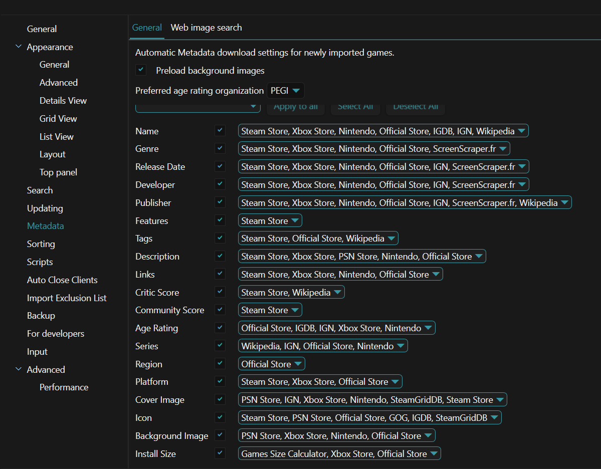
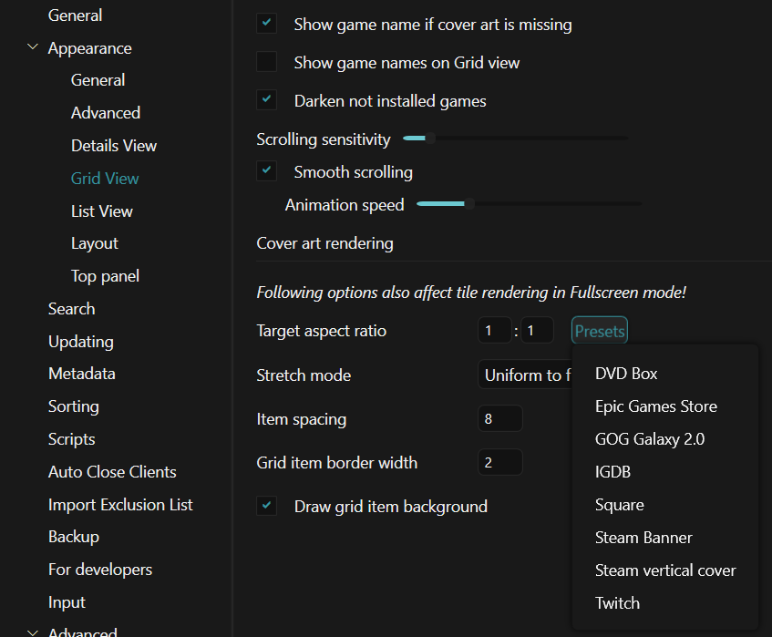

Artwork & Metadata
Aniki ReMake can only display information and artwork that exists in your Playnite library or is supplied by a compatible add-on.
A good metadata setup makes a large difference to how the theme looks.
Background images are strongly recommended
Aniki can work with different background modes, but several views are designed around having useful game artwork available.
If your library contains games with no background image, some Aniki areas can look empty when you choose game-background modes.
Before spending time troubleshooting the theme, make sure your games have:
- a cover;
- a background;
- the basic metadata you want Aniki to display.
Check one game's metadata
In Playnite Desktop:
- Find the game.
- Right-click it.
- Select Edit.
- Review its metadata and media.
- Save.
Depending on your Aniki settings, the theme can use fields such as:
- name;
- cover;
- background;
- source;
- platform;
- genre;
- category;
- release date;
- description;
- playtime;
- last activity;
- completion status;
- rating;
- Features.
If a field is empty in Playnite, enabling that field in Aniki cannot create the missing data.
Configure automatic metadata sources
In Playnite Desktop:
- Click the Playnite icon in the top-left corner.
- Select Settings....
- Open Metadata.
- Find the metadata field you want to configure, for example Cover Image or Background Image.
- Order the available sources by priority.
- Put your preferred source first.
- Save.
Playnite tries the first source first. If it cannot provide the requested metadata, Playnite can move to the next source.

images/artwork-and-metadata-01.pngOptional metadata sources that work well with Aniki
You are free to use any metadata source you prefer.
Two optional sources can be useful for Aniki-style libraries:
Universal PSN Metadata
Useful if you like:
- square PlayStation-style covers;
- PSN artwork;
- backgrounds that often work well with console-style layouts.
To install it:
- Open Playnite Desktop.
- Press F9.
- Open Browse → Metadata Sources.
- Search for Universal PSN Metadata.
- Install and configure it.
- Put it high in the Cover Image / Background Image priority if you want Playnite to prefer its artwork.
IGN Metadata
IGN Metadata can also provide covers, backgrounds and general game metadata.
Install it from Browse → Metadata Sources, then add it to the relevant metadata priorities.
These are visual recommendations, not requirements. If you already have artwork you like, you do not need to replace it.
Download metadata for existing games
Changing metadata priorities does not automatically replace all artwork already stored in your library.
To update existing games:
- Open Playnite Desktop.
- Open the Playnite main menu.
- Select Library → Download Metadata.
- Choose the games you want to process.
- Choose whether Playnite should download only missing metadata or also replace existing metadata.
- Continue through the metadata wizard.
You can also press Ctrl + D.
Refresh the entire library
If you intentionally want to rebuild metadata for the whole database:
- Open Library → Download Metadata.
- Choose All Games From Database.
- Disable Only Missing Metadata only if you really want existing metadata to be replaceable.
- Continue through the wizard.
Be careful with this option if you manually curated covers or backgrounds.
Cover shape and grid layout
Two different settings affect how covers appear:
- Target aspect ratio controls the shape of the covers.
- Columns and rows control how many covers Aniki displays on screen.
Do not change one when you actually mean the other.
Change the cover aspect ratio
Use Playnite Desktop:
- Click the Playnite icon.
- Select Settings....
- Open Appearance → Grid View.
- Find Target aspect ratio.
- Choose one of Playnite's normal aspect-ratio presets.
For square covers, choose 1:1.

images/artwork-and-metadata-02.pngChange Aniki's columns and rows
Use Aniki Fullscreen:
- Press Start / Menu.
- Open Settings.
- Open Layout.
- Adjust columns and rows.
Aniki supports:
- Standard covers: 6–10 columns and 1–2 rows.
- Square covers: 5–9 columns and 2 rows.
- Banner / hero covers: 2–4 columns and 2–3 rows.
If Aniki displays Unsupported layout settings, follow the values shown by the warning.
Steam Feature icons
Some Aniki layouts display icons for game features such as:
- achievements;
- cloud saves;
- controller support;
- multiplayer/co-op;
- HDR;
- VR;
- Workshop;
- Remote Play;
- and other supported Features.
These icons come from the game's Features metadata in Playnite.
If an expected feature icon is missing:
- Open Playnite Desktop.
- Right-click the game.
- Select Edit.
- Check the Features field.
- Add/correct the feature metadata.
- Save.
The theme cannot show a feature icon when the corresponding Playnite Feature is missing.
Backgrounds are missing
First check the game itself:
- Open Playnite Desktop.
- Edit the game.
- Confirm a Background Image exists.
- Save.
- Return to Fullscreen.
If the game has a background but Aniki still does not show it, check:
Start / Menu → Settings → Customization → Backgrounds and Videos
Then verify Main library background is using a mode that can display game backgrounds.
See Backgrounds & Visual Packs.
Next: logos and trailers
Logos and trailers are handled through Extra Metadata Loader rather than normal Playnite cover/background fields.
Continue with: